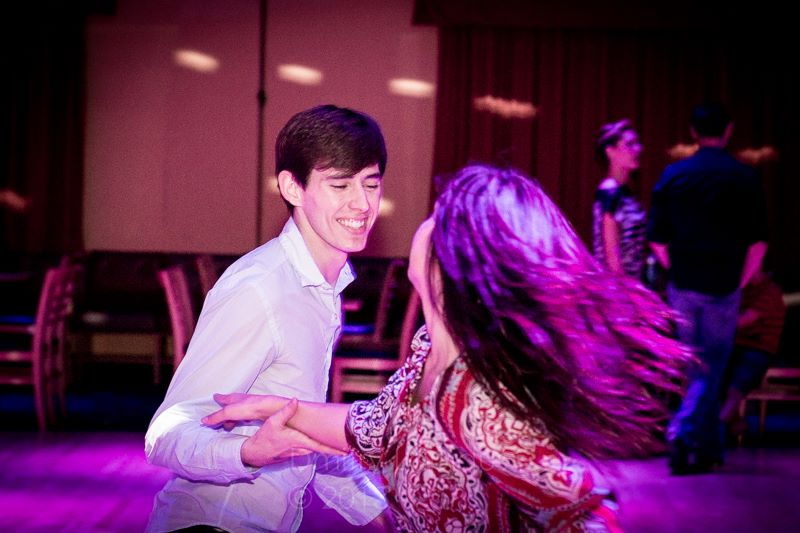

of Americans socialized on an average day in 2025, down from 38% in 2015.
01
Why Hey Sammy exists
A good life needs somewhere to go.
And people who notice when you come back. Hey Sammy helps people find recurring, participatory places where they can try something new, see the same faces, and give friendship enough time to grow.
See the problem we are working on
Our belief
Friendship requires frequency.
Show up. Come back. Become a regular.
The problem
We have more ways to communicate—and fewer reasons to be together.
School once gave us repeated contact for free. So did neighborhoods, offices, clubs, and community organizations. Adult life removed many of those built-in collisions, then handed us a screen that asks nothing from us except that we keep scrolling.
of Americans ages 18–29 said loneliness had bothered them recently.
03of adults under 30 report five or more close friends, versus 49% of adults 65+.
04
A generation with less friend time
Daily in-person time with friends, ages 15–24
Minutes per day
150
min / day
2003
40
min / day
2020
The endpoints come from the U.S. Surgeon General’s review of American Time Use Survey research; they are not interpolated annual estimates. Source 02
Why it matters
Connection belongs beside movement, sleep, and nutrition.
Loneliness is an emotion. Social isolation is a circumstance. Neither is a character flaw—but chronic disconnection is a real health risk, and strong relationships are a real protective factor.
greater odds of survival were associated with stronger social connection across 148 studies.
more likely to report very good or excellent health among people with a very strong sense of community belonging.
Associations summarized by the U.S. Surgeon General. Source 02
The hopeful part
Friendship is an environment before it becomes a relationship.
Most friendships do not begin with one perfect conversation. They begin with conditions that make the next conversation easier.
-
01
Shared activity
Something natural to do and talk about.
-
02
Repeated contact
The same room, rhythm, and people.
-
03
Familiar faces
Recognition lowers the stakes.
-
04
Trust and friendship
Shared history accumulates.
Where close friendships begin
Repeated places do more work than perfect introductions.
Americans most often report meeting a close friend through places and networks that create recurring contact. Respondents could choose more than one setting.
Share of Americans with close friends who report meeting one in each setting. Source 05
Social infrastructure
We do not need more networking events. We need more places to return to.
A third space is somewhere outside home and work where you can show up regularly, participate, and gradually become known. A run club. A dance social. A pottery studio. A volunteer shift. A community garden. A pickleball court. The place matters because it gives people a rhythm.
- Regulars and a predictable cadence
- Something to do together
- Natural opportunities to talk
- A welcoming path for newcomers
- A reason to come back next week

A founder note
This started on a dance floor.
I dropped out of college for a year and felt completely lost. Coaching my old high school track team gave me somewhere to be useful. Then a friend invited me to learn ballroom dancing in Tucson—and that small yes changed the direction of my life.
Dancing was social, creative, hard, and connective. People taught me for free, stayed late to practice, and eventually handed me a key to the studio. Ballroom led to West Coast Swing, new friends, inspiring people, and eventually San Francisco. None of it came from waiting for clarity. It came from trying something and continuing to show up.
People help people who show up.
Hey Sammy is my best attempt to help more people take that first step, find a place worth returning to, and give life more chances to meet them halfway.
What we are building
An event finder gives you a list. We are trying to give you a bridge.
Hey Sammy is built around participation, not passive listings. It helps someone move from “I should do something” to “I know where to go, what to expect, and what to do next.”
-
Find
Recurring, participatory activities—not just one-off entertainment.
-
Decode
Can I go alone? Is it beginner-friendly? Where do I stand? What do I bring?
-
Commit
Choose a real time, add it to the calendar, and make the next step obvious.
-
Return
Come back until the room, the activity, and the people become familiar.
Hey Sammy does not create community. It helps people enter and strengthen communities that are already doing the work.
What success looks like
Downloads are a means. Regulars are the goal.
- More people make one recurring real-world commitment.
- Showing up alone feels less confusing and intimidating.
- First-timers return enough times to become familiar.
- People build hobbies, confidence, skills, and friendships together.
- Local organizers and third spaces gain committed new regulars.
- The social life of a city becomes easier to understand and enter.
Find one place worth returning to.
Put one real thing on your calendar this week. Show up, come back, and give life a chance to recognize you.
Research
Sources and notes
Last reviewed July 9, 2026. Statistics describe populations, not individual destinies.
-
01
U.S. Bureau of Labor Statistics, American Time Use Survey—2025 Results.
-
02
Office of the U.S. Surgeon General, Our Epidemic of Loneliness and Isolation, 2023.
-
03
Harvard Kennedy School Institute of Politics, Harvard Youth Poll, Spring 2023.
-
04
Pew Research Center, What does friendship look like in America?, 2023.
-
05
Survey Center on American Life, The State of American Friendship, 2021. Respondents could identify multiple places where they met a close friend.
-
06
Pezirkianidis et al., Adult friendship and wellbeing: a systematic review, 2023.